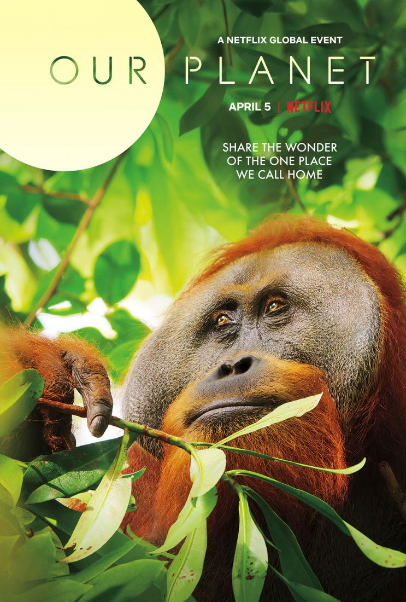
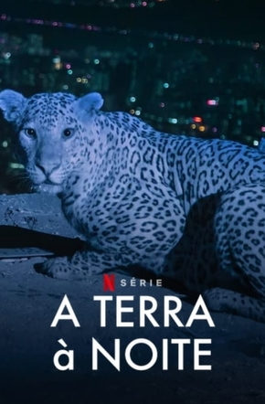
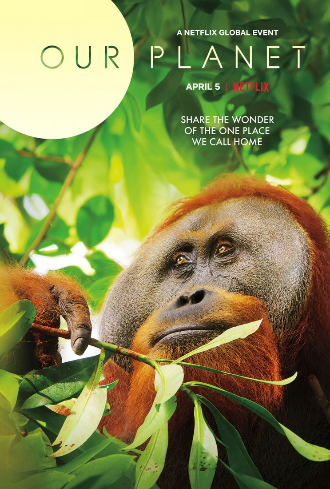
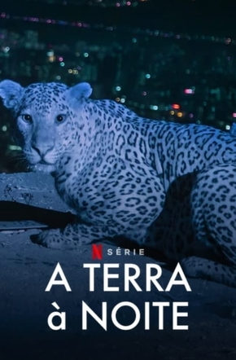

The world need us, help and protect
The world need us, help and protect


Este site tem como finalidade trazer informações sobre a causa de proteção animal e incentivar a consciência humana. Animais não são objetos, o incentivo á venda de animais sendo estas legais ou não, contribui para o desrespeito e atos de crueldade com os mesmos. Note a ambiguidade do título, essa infelizmente é verdadeira para os dois sentidos existentes. A seguir, veja alguns exemplos dos direitos dos animais, deacordo com os Direitos Humanos:
Obs: Notou a ovelhinha andando pelo site? Ela está aqui para ilustrar o tema, você pode interagir com ela através do microfone e também pelo mouse!
A principal lei que protege os animais é a Federal 9.605/98, conhecida como Lei dos Crimes Ambientais:
Art.32 – Praticar ato de abuso, maus-tratos, ferir ou mutilar animais silvestres, domésticos ou domesticados, nativos ou exóticos. A pena será de 3 meses a 1 ano de prisão e multa, aumentada de 1/6 a 1/3 se ocorrer a morte do animal.
A seguir estão algumas recomendações de documentários importantes sobre a vida animal que podem ser encontrados na plataforma Netflix:
 



Caso presencie algum caso de maus tratos: disque 190 e contate a Polícia Militar ou registre o caso em uma delegacia de polícia. Ajude-nos a combater os maus tratos, fale pelos animais.